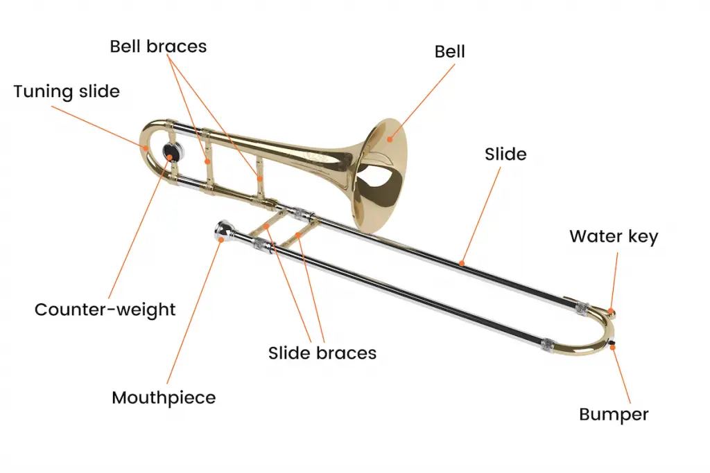

Brass instruments are all about power and impact. They can express the full range of human emotion from the most joyous of celebrations to the depths of sorrow.
-Wynton Marsalis
Brass instruments produce sound through the vibration of the player's lips against a cup-shaped mouthpiece, which creates a column of air that resonates within the instrument and produces the sound that we hear.
Brass
Trumpet
The trumpet is characterized by its striking, triumphal sound and by the fact that it boasts the highest register of all the brass instruments. It does splendid work, single-handedly giving expression to heroism and jubilation.
Trombone
Trombones produce sound as they are extended and contracted. They have continued to evolve since their creation in the 15th century.

Horn
The horn is a brass instrument whose soft resonant timbre allows it to harmonize well with both brass and woodwind instruments. One of the unique aspects of this instrument is that the player keeps a hand in the bell while playing.
Tuba
The tuba, which produces the lowest pitched sound of all brass instruments, has different configurations depending on the country and the musical style.